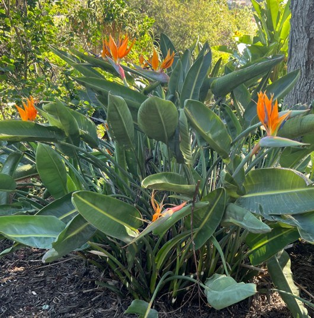
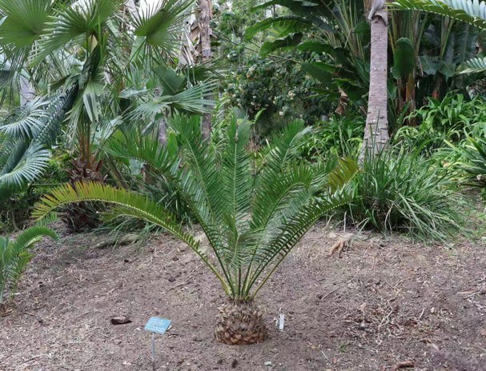
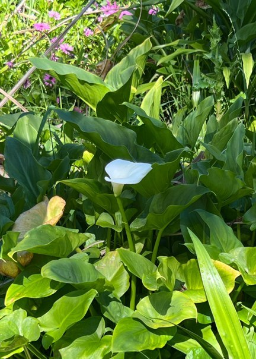
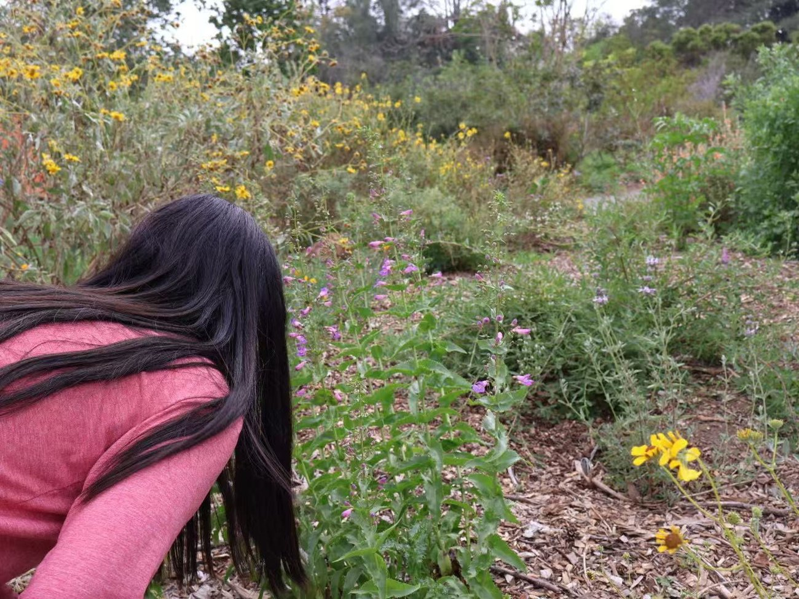

🌸
Image pending verification
Image pending verification
Severe
True lilies
True lilies and daylilies can cause life-threatening kidney injury in cats, including from pollen or vase water.
View plant profile →A beautiful plant can carry an unexpected risk. Explore the student-led research behind Safe Gardens, Safe Cats and discover simple ways to help protect feline companions.

These examples show why plant identification and exposure details matter. They are not a complete list of household hazards.
True lilies and daylilies can cause life-threatening kidney injury in cats, including from pollen or vase water.
View plant profile →
All parts can be dangerous, particularly the seeds. Exposure can lead to serious illness and liver damage.
View plant profile →
Not a true lily. Its crystals can irritate the mouth and cause drooling or difficulty swallowing.
View plant profile →Our team studied plant names and potential hazards, photographed plants at San Diego Botanic Garden, gathered 114 community survey responses, and interviewed Dr. Ellis at Academy Animal Hospital.
The project also developed a preliminary San Diego Cat Plant Risk Index (SD-CPRI) to explore how toxicity, household presence, exposure, and awareness might inform education priorities. It is not a validated model for predicting poisoning.
Read about the project →
Our team’s manuscript shares the research process, survey findings, veterinary interview, early SD-CPRI model, plant profiles, and practical prevention tips.
Publication status: in review. A public download will be added once scientific information, image permissions, and author credits are finalized.
Meet the contributors →Move your cat away from the plant and contact your veterinarian, emergency veterinary clinic, or an animal poison-control service promptly. For possible true lily exposure, seek veterinary advice immediately, even if your cat seems well. Do not induce vomiting or try home remedies unless a veterinary professional tells you to.
Find ASPCA plant information ↗